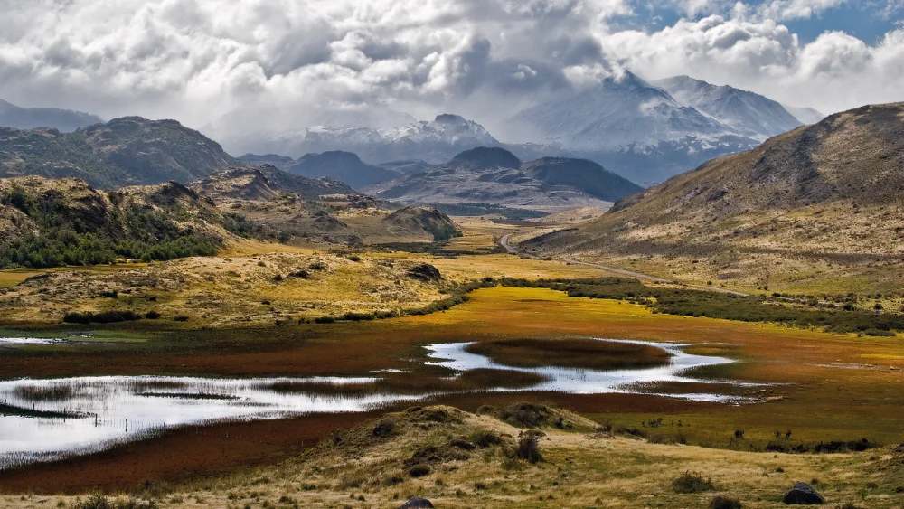
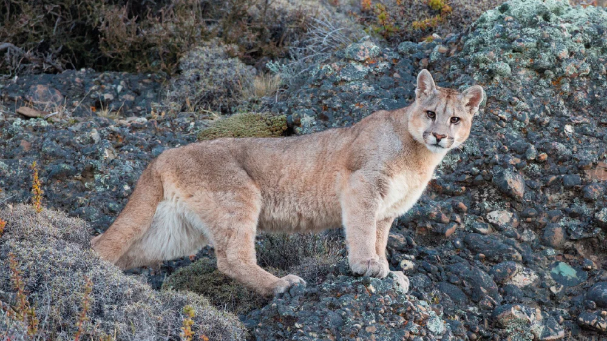
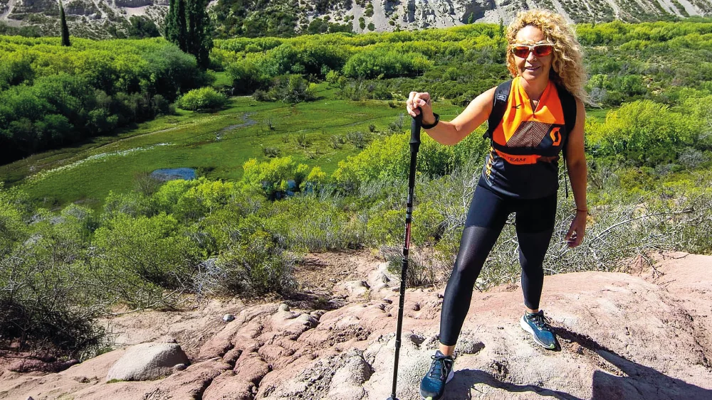

Circuitos turísticos
Senderismo y avistaje de fauna

Recorridos guiados entre senderos y especies autóctonas
El Portal Cañadón Pinturas es un área protegida abierta al público que invita a descrubrir la vida silvestre y los paisajes característicos de la estepa patagónica. Ubicado en el corazón del Parque Patagonia Argentina, desde este punto se pueden planificar recorridos hacia distintos sitios y postales, incluyendo el Parque Provincial Cueva de las Manos, declarado patrimonio cultural de la humanidad por la UNESCO. El Centro de informes, situado sobre la Ruta Nacional 40, es el punto de partida de una red de senderos ideal para el avistaje de fauna y para recorrer los cañadones donde los primeros habitantes plasmaron su arte hace más de nueve mil años.
La vida silvestre por descubrir

Un encuentro cercano con la biodiversidad patagónica
Los senderos del Portal Cañadón Pinturas invitan a descubrir una gran variedad de animales y plantas nativos de la Patagonia. Es posible observar manadas de guanacos alimentándose en valles y mallines; chinchillones anaranjados asoleándose en paredones rocosos; choiques con sus charitos camuflados entre los colores de la estepa y hasta el sigiloso puma. Los recorridos estan señalizados con estacas y cartelería, y presentan variada duración y niveles de dificultad. Entre los principales senderos se encuentran: Tierra de Colores, Koi, Meseta de Sumich, Cerro Guanaca y la Bajada Tradicional, que permite acceder a pie al Centro de Informes de Cueva de las Manos. En el profundo cañadón se ubica la antigua estancia Alto Río Pinturas, hoy conocida como "Casa de Piedra", accesible a través de empinados senderos que continúan hacia el Cañadón Caracoles. El camino hacia los miradores del Cañadón Pinturas rodea la Meseta Sumich, ofreciendo la posibilidad de ascenderla a pie y disfrutar de un entorno natural con vista panorámica de 360º.
Caminata en la naturaleza

Travesias que invitan a conectar con el paisaje paso a paso
Los deportes de montaña proveen múltiples beneficios a quienes lo practican. El creciente número de aficionados es más que suficiente para afirmarlo. Se trata de reconectar con la naturaleza y desconectarse de la rutina cotidiana. El montañismo abarca diversas disciplinas, entre ellos: escalada de roca, escalada en hielo, esquí, trail running, ciclismo en montaña, senderismo y trekking, entre otros. "El trekking consiste en caminar en ambientes montañosos, senderos no tradicionales o sin demarcación", explica Estela Bezunartea, técnica y guía superior de trekking. Cabe agregar que se desarrolla en sitios con desniveles leves, moderados o pronunciados, en distintas condiciones geográficas. "Por lo general, los trayectos son de dificultad media o alta; pueden durar menos de una hora o varias horas, siempre con el fin de contemplar los atractivos naturales y culturales que se encuentran en el recorrido o simplemente por motivaciones personales-paisajísticas o deportivas- del caminante o trekkinista", completa Estela. En términos generales, como actividad deportiva, el trekking ofrece múltiples beneficios físicos, mentales y espirituales. "Salir a conectar con la naturaleza genera una sensación de bienestar, es volver a la esencia de lo que somos: parte del ambiente", enfatiza la guía, y agrega: "Además, genera un bienestar social, porque se interactúa con personas con las que se comparten afinidades por estas actividades."